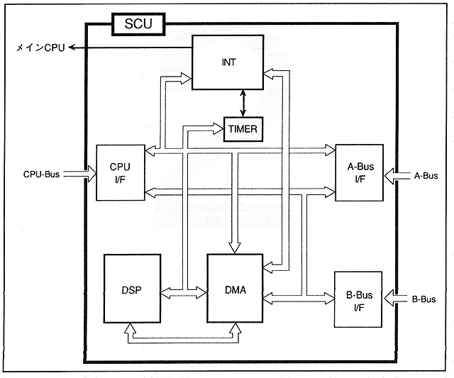

Return to previous page ｜ Return to menu ｜ Go to next page
-
■ Block diagram
- Figure 1.2 shows the block diagram of SCU. As mentioned before, SCU is equipped with CPU, A-Bus, B-Bus interfaces, DMA controller, interrupt controller, DSP, and so on.
Each interface and controller are connected via a bus to enable data transfer.
∙ The CPU I / F and A-Bus I / F are connected by two buses. The upper part is connected via a register and the lower part is used for data transfer. Therefore, DMA transfer is performed using the lower bus.
Figure 1.2 Block diagram

Return to previous page ｜ Return to menu ｜ Go to next page